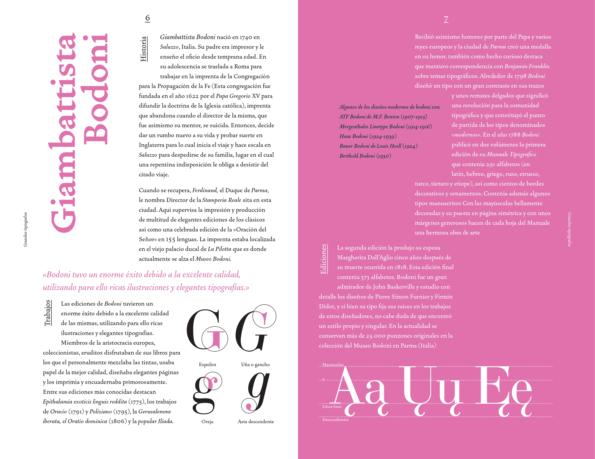
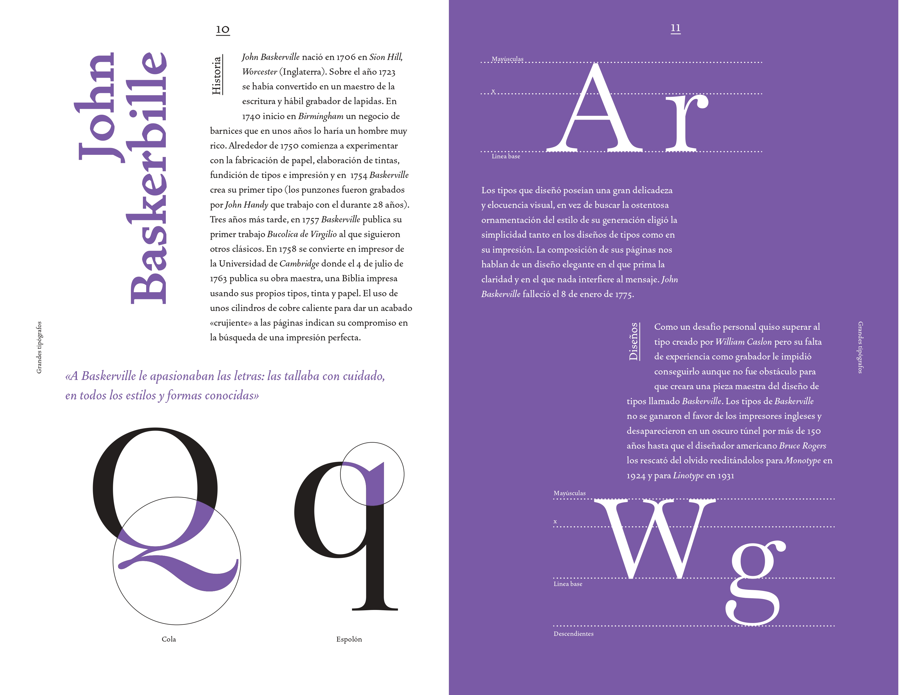
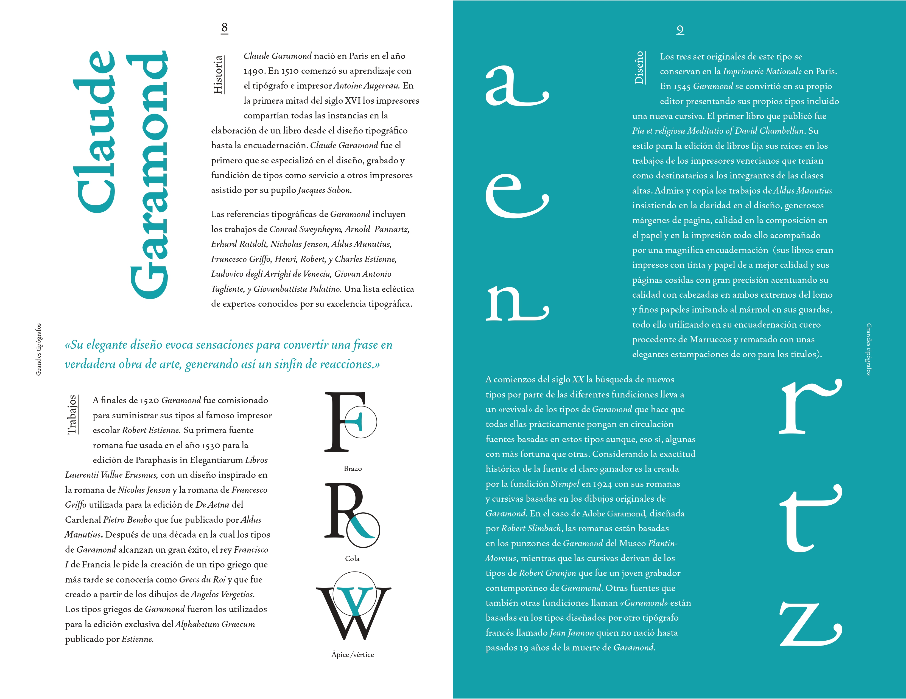
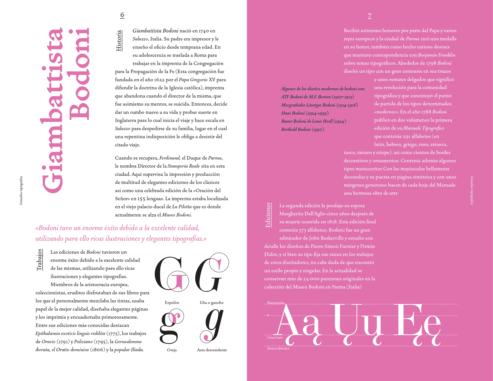
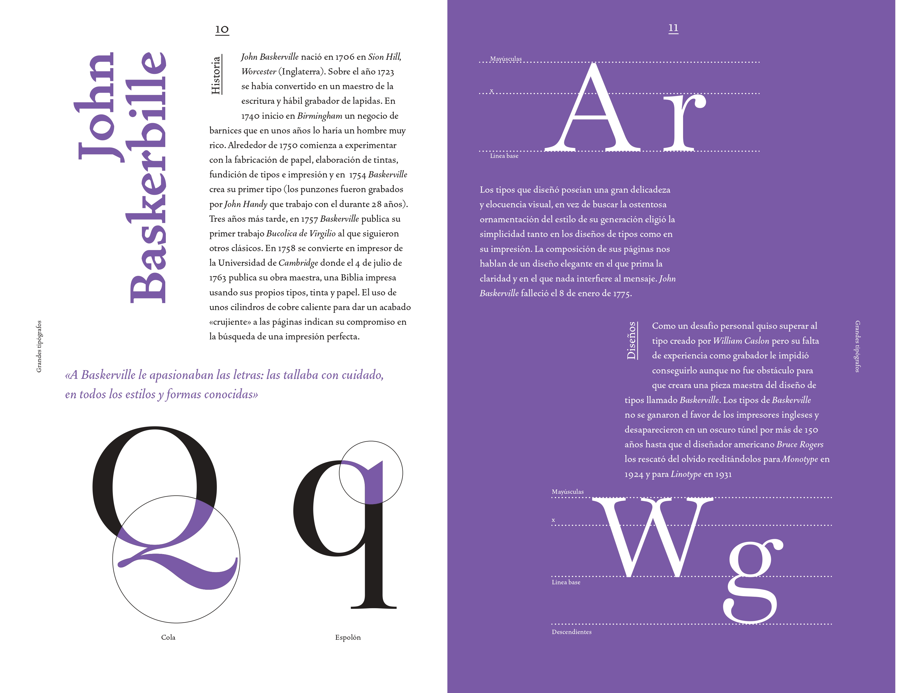
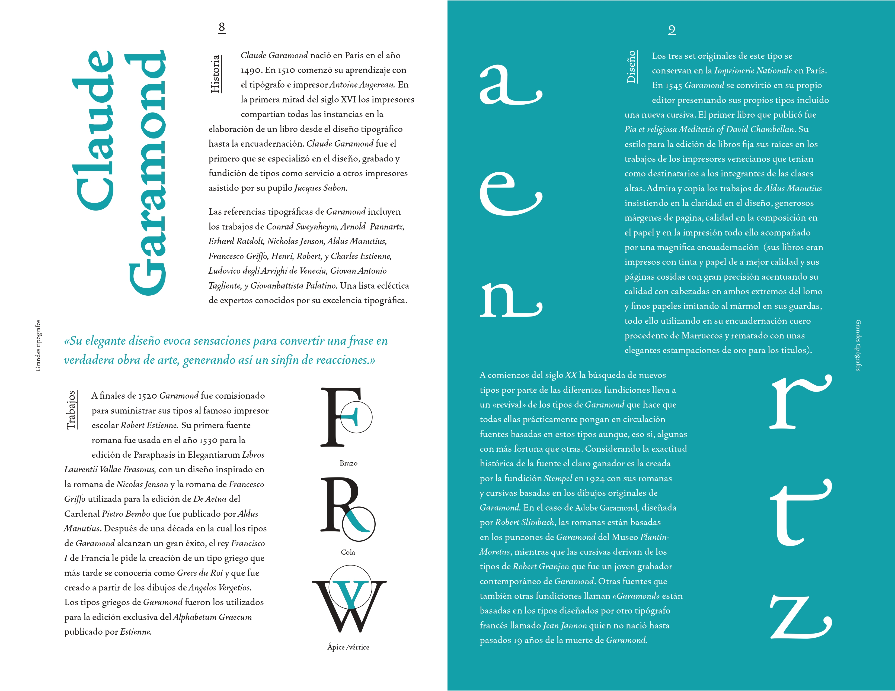

Fanzine tipográfico
El proyecto trata de una serie de volúmenes de un fanzine tipográfico dedicado a grandes tipógrafos de la historia. En total, se crearon 3 volúmenes, cada uno enfocado en la vida y obra de un tipógrafo destacado.
- Integrantes: Aylen Bassaletti
- Fecha: 23/09/2021
- Temática: Fanzine Tipográfico.
- Recursos usados: Illutrator e InDesing.